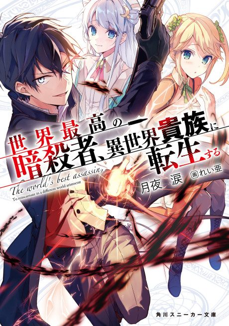

Anime
Anime
Light novelThe World's Finest Assassin Gets Reincarnated in Another World as an Aristocrat
世界最高の暗殺者、異世界貴族に転生する
After the anime, read the light novel from Volume 2.
7.2AniList
—Animeter
12 epEpisodes
Anime finished. Where does the story go next?
Start at Volume2
The anime adapts light novel volume 1, so start at volume 2 (the Academy arc). The light novels are still releasing.
11ongoing
Season 1Start reading here